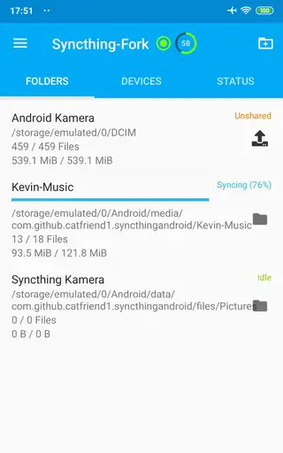

Syncthing-Fork
إنترنت ومتصفحات
هذا تفرع (fork) من غلاف Syncthing-Android لـ Syncthing، ويقدم تحسينات رئيسية مثل: * يمكن قراءة تقدم المزامنة للمجلدات والأجهزة والتقدم الإجمالي بسهولة من واجهة المستخدم. * ميزة "كاميرا Syncthing" - ميزة اختيارية (مع إذن اختياري لاستخدام الكاميرا) حيث يمكنك التقاط الصور مع صديقك، شريكك، ... على هاتفي
✓ ترخيص مفتوح (MPL-2.0) · آخر تحديث: 2026-10-25
2.1.7.0الإصدار
59.1 MBالحجم
MPL-2.0الرخصة
Open in Kanzتحميل APK (59.1 MB)
Download APK
SHA-256: 1ad568a373bd36c48100796e5fac3ebd0a0e0663ffdab1dc2baac355ab140063

تطبيقات تانية لنفس المطوّر (3)
More apps from this developer: com.github.catfriend1
امسح الكود لفتح صفحة التطبيق
Scan to open this app page
لو كنز مش متثبت عندك: نزّل متجر كنز.
Not installed? Get the Kanz store.